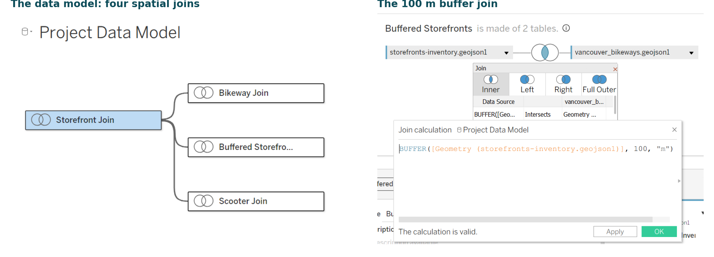
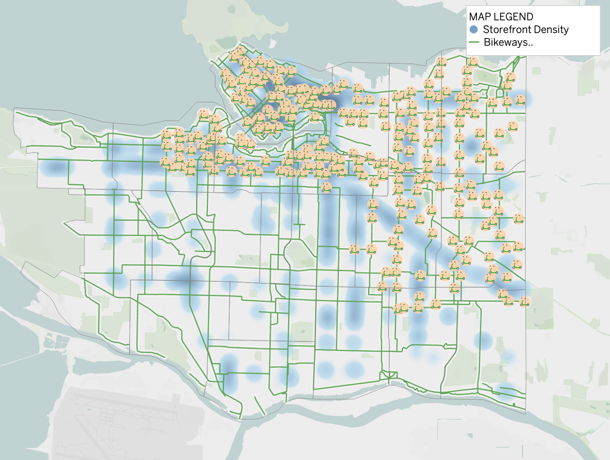
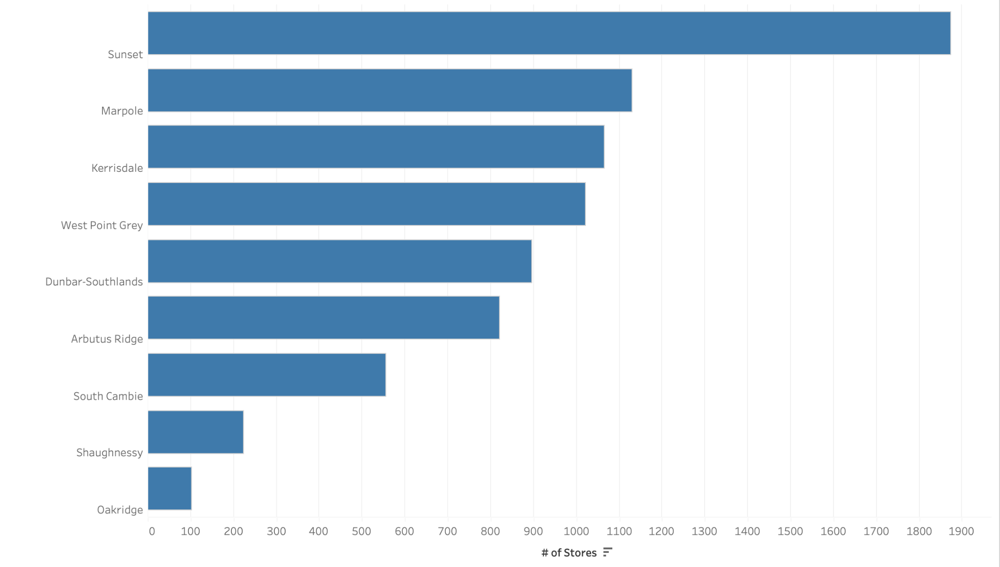
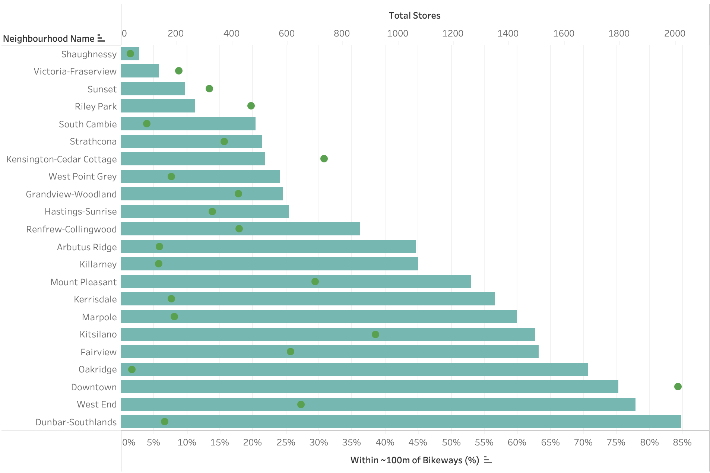

BAIT 518 DATA VISUALIZATION · FINAL REPORT
Mobility and Business Access in Vancouver
Identifying gaps between commercial activity, Lime scooter coverage, and bikeway accessibility across Vancouver.
Group 1 | [Tanner Brine: [29630647]], Yuheng Wu: [83805945], Serena Li: [72428220], Shivaang Jain: [74711052], Silvia De Hoyos: [60417979]]] :], Ioannis Polyzopoulos: [39662366] · October 30, 2026
Key Findings and Recommendations: Vancouver’s micromobility accessibility gaps vary across neighbourhoods, highlighting the need for targeted improvements based on accessibility challenges.
- Sunset and Kerrisdale–Arbutus Ridge: These areas show gaps in Lime scooter station coverage despite existing commercial activity, suggesting potential opportunities for additional scooter parking locations. - Kerrisdale: Limited bikeway connectivity near commercial areas suggests opportunities to improve cycling infrastructure and strengthen access to local businesses. - Kingsway Corridor: The existing bikeway network does not fully align with the distribution of commercial activity and scooter stations, indicating a need for better integration between cycling routes and commercial destinations. - Overall Finding: Different neighbourhoods face different accessibility challenges. Addressing these gaps requires a combination of expanded scooter station coverage, improved bikeway connections, and better coordination between transportation infrastructure and commercial activity.
1. Analysis Background
Vancouver is one of the few Canadian cities where travelling without a car is practical all year round, and more people are doing it (City of Vancouver, 2025). Cycling trips grew 60.4% between 2017 and 2023, faster than any other way of travelling (Mountain, 2025). Today 53% of daily trips are made on foot, by bike or by transit, and 48% of trips to restaurants and 38% of shopping trips are made on foot (City of Vancouver, 2025). At the same time, there is little room for more parking: about 28.8% of the city’s land is already allocated to streets - including sidewalks, some bike routes and property easements (Von, 2018).
For a local shop, this means a growing share of customers arrive on foot, by bike or by e-scooter. Hence, a shopping street or any booths that are hard to reach this way is at a disadvantage.
Analysis goal: Which commercial areas in Vancouver have the biggest gaps in bike and e-scooter access, and where could better connections help accessibility local businesses? This analysis considers both bicycles and Lime e-scooters, as e-scooters provide an alternative mobility option for individuals who do not own a bicycle or prefer transportation that does not require pedalling.
Audience: • City of Vancouver planners and transportation policymakers: Key decision-makers responsible for planning and prioritizing bikeway infrastructure and scooter parking locations.
• Business Improvement Associations (BIAs): Organizations representing local businesses and advocating for improvements in commercial districts.
• Lime (in Collaboration with the City of Vancouver): As a micromobility service provider, Lime could use our findings to identify high-density commercial areas with limited scooter parking coverage and inform potential expansion strategies in coordination with the City policy makers.
2. Methodology
The data
All data was obtained from the City of Vancouver Open Data Portal.
Initial analysis attempted to use the latitude and longitude columns in the City’s CSV files. The files did not line up well because they describe places at different levels of detail. So we used the map (GeoJSON) versions, which Tableau can interpret as geographic features. This enabled us to perform spatial joins and integrate the datasets based on their geographic relationships.
| Dataset | What it contains | Why we used it | Size used |
|---|---|---|---|
| Local-area -boundary | The outlines of the city’s 22 official neighbourhoods. | To sort every shop and scooter station into a neighbourhood | 22 neighbourhoods |
| Storefronts Inventory | Every ground-floor business: name, type, address and map location, surveyed once a year from 2020 to 2026. | To find where the shops are | 10,079 shops (2020 - 2026) |
| Bikeways | Every bike route segment, from quiet local-street routes to protected lanes. | To measure how close each shop is to a bike route | 3,774 route segments |
| Lime e-scooter Stations | The location and number of parking spots at every docking station. | To include people who don’t ride a bike | 250 stations, 3,059 spots |
Table 1: Source Data Schema
Data Selection Criteria
To ensure that the analysis aligns with its objective of evaluating alternatives to motor vehicle transportation, businesses classified under the “Automotive” category were excluded. Although some customers may access automotive businesses by bicycle or e-scooter, these establishments were considered less relevant to the primary focus of this study. Excluding them allows the analysis to concentrate on businesses where improved micromobility infrastructure may have greater relevance to everyday accessibility.
It was also decided that vacant storefronts should be omitted. While increased accessibility for these storefronts may lead to a reduction in vacancy rate, there are too many confounding factors which may lead to vacancy for these locations.
| Business type | Examples | Shops (2026) | Included? |
|---|---|---|---|
| Food & Beverage | Restaurants and cafés | 2,777 | Yes |
| Comparison Goods | Things people shop around for: clothes, books, furniture | 2,017 | Yes |
| Convenience Goods | Everyday items: groceries, pharmacies | 1,543 | Yes |
| Entertainment & Leisure | Theatres, gyms, studios | 295 | Yes |
| Service Commercial | Hair salons, dental clinics, banks | 3,609 | Yes |
| Vacant | Empty units | 2,574 | No |
| Vacant UC | Vacant Urban Core | 411 | No |
| Automotive | Car repair shops, dealerships | 175 | No |
Table 2: Storefront Inventories Layout
Data Modelling & Calculated Fields

Figure 1. Left: the four joins in Tableau’s data model. Right: the buffer join that finds shops within 100 m of a bikeway.
The data model (“Project Data Model”, Figure 4) links four spatial joins by neighbourhood. Storefront Join and Scooter Join place each shop and station in its neighbourhood. Buffered Storefronts finds the shops within 100 m of a bikeway. Bikeway Join only draws the routes on the map and is kept for future analysis.
Key calculated fields: TotalStores = COUNTD(store_id); StoresNearBikelanes = distinct shops in the buffered join; PercentStoresNearBikelanes = the second divided by the first. To match this report, shop counts use the 2026 records and the four customer-facing business types. The supporting file access_gap_check.py recalculates every number in this report from the raw data.
Metrics
1. Sort key data into neighbourhood. In Tableau spatial joins were used to match records to neighbour polygons the map. We joined the neighbourhood outlines to the storefronts, bikeways and to the scooter stations, keeping every object that falls inside a neighbourhood using an intersection (inner join). The joined tables are then linked to each other by neighbourhood name.
2. Measure bike access (Percent of Stores Within ~100 m of a Bikeway). Tableau’s BUFFER calculation was used to create a calculated spatial join between storefront locations and bikeways. Following Tableau’s guide on buffer calculations (Salesforce, 2020) a 100m polygon was added to each storefront and joined with the bikeway geographic data, resulting in a filtered list of stores within approximately 100m of a bikeway. Caveats: Vancouver storefront data is only accurate to the nearest city block, to accommodate multiunit businesses and other scenarios. This means the 100m buffer is accurate to 100m +/- one city block. One shop can sit near several route segments, so we counted each shop only once. For each neighbourhood: shops within 100 m of a bikeway ÷ all shops in that neighbourhood.
3. Measure scooter access (Stores in Neighbourhoods Without Lime Scooter Stations). The total storefronts in each neighbourhood was counted, and a filter was applied to focus on neighbourhoods with no scooter stations.
4. Map. This visualization consists of a map with layers for a heat map of storefront locations, the bike routes and the scooter stations on one map. It allows for visual analysis and comparison with other metrics to identify inconsistencies and outliers.
Navigating the Tableau Workbook
The packaged file CheckPoint4.twbx contains all data. The storyboard summarizes Small Scale Transport in Vancouver and click through its four points:
• Map View: Shows storefront heat map, bike routes (green) and Lime stations (orange).
• No Scooters: Counts the number of storefronts in each neighbourhood with no Lime station.
• No Bikelanes: Shows the share of shops within approximately 100m of a bikeway (bars) and total shops (dots).
• Dashboard: Shows all 3 visuals on a single, interactive dashboard which can be filtered by Neighbourhood from any individual visual.
4. Key Findings
Finding 1: Uneven Alignment Between Scooter Stations and Commercial Activity

The map shows the location of Lime scooter stations (orange circles), bikeways (green lines), and storefront density (blue shaded density) across Vancouver. Scooter stations are concentrated in the northern and central parts of the city; particularly around downtown, while several areas in southern Vancouver show notable storefront inventories but limited scooter station coverage. These are gaps in accessibility and opportunities to expand scooter services near commercial areas.
Finding 2: Commercial Areas Without Lime Scooter Stations

The bar chart highlights nine Vancouver neighbourhoods without Lime scooter stations. Sunset neighborhood has the highest number of stores, with over 2,000, followed by Marpole, West Point Grey, and Kerrisdale. The intersection of both findings suggest potential gaps in scooter accessibility, where neighbourhoods with high concentrations of businesses could be priority areas for future station expansion.
Finding 3: Uneven Bikeway Accessibility Across Commercial Areas

The chart compares the percentage of storefronts located within ~100 meters of bikeways across Vancouver neighbourhoods, alongside the total number of stores. Dunbar-Southlands, West End, and Downtown have relatively high bikeway accessibility, while Sunset, Victoria-Fraserview, and Shaughnessy have much lower coverage. This highlights uneven access to cycling infrastructure across commercial areas and suggests opportunities to improve bikeway connectivity, particularly in neighbourhoods with limited existing coverage.
5. Recommendations
Based on Table 3, we identified two main gaps within the scope of our project: neighbourhoods without access to Lime docking stations and those with limited access to bike lanes. Table 3 prioritizes these neighbourhoods according to accessibility needs and potential implementation feasibility.
Sunset has the largest storefront inventory, with 1,874 storefronts, but no access to Lime scooters and only 11% of its storefronts within 100 metres of bike lanes. It is followed by West Side, Kerrisdale, Marpole, Dunbar, and Point Grey, which also lack access to Lime docking stations. Lastly, Kingsway has Lime scooters available but lacks convenient access to bike lanes near its storefronts.
| Priority | Where | Gap | Suggested first step |
|---|---|---|---|
| 1 | Sunset | Scooter Availability &Bike Lane Access | Pilot Lime stations at the main shopping blocks and add short, safe links from these streets to the nearest bike routes. |
| 2 | West side, Kerrisdale (W 41st Ave), Marpole, Dunbar, Point Grey (W 10th Ave) | Scooter Availability | Extend the Lime docking network west and south. A station only needs a few curb spaces, and nine neighbourhoods have none today. |
| 3 | Kingsway and Victoria Drive | Bike Lane Access | Study safe bike connections to the shopping blocks. Scooters already serve these streets, so this can follow the first two. |
Table 3: Future Recommendations
Short term: Collaborate with Lime and the City of Vancouver to expand scooter parking infrastructure in underserved neighbourhoods, particularly Sunset and the commercial areas near the Kerrisdale–Arbutus Ridge boundary. Prioritize locations with high storefront density and limited existing scooter access.
Middle term: Evaluate opportunities to expand and improve cycling infrastructure in key commercial areas of Kerrisdale. Focus on strengthening connections between existing bikeways, commercial streets, and potential scooter parking locations to enhance accessibility.
Long term: Develop a comprehensive strategy to improve cycling accessibility along the Kingsway corridor in regards to bikelane access (horizontal/vertical) and store locations (diagonal).
6. Limitations
• Access is not the same as sales. We measure how close shops are to bike routes and scooters, not what customers spend nor the estimated usage for new bike routes or scooter stations. These could be a complementary analysis needed to understand the economic growth impact in the area.
• The 100 m cutoff is a choice. Choosing 150 m and 200 m doesn’t meaningfully change the analysis, but does change the degree of the difference between neighbourhoods.
• We left out some businesses. Automotive services were omitted since their market is vehicles that are out of the scope of this study. Vacant storefronts were also omitted.
7. Further Analysis
• Future research could incorporate pedestrian counts, automotive and public transit accessibility, business vacancy rates, and customer spending data to better understand the relationship between transportation access and commercial activity. • Analysis could be performed on different types of cycling infrastructure, since a protected bike lane may provide a different level of accessibility and safety than a shared local-street route.
Appendix
AI Usage
Claude (Anthropic) was used to review our Tableau workbook, re-check every number in Python from the raw data, and help draft this report and our closing remarks. The team checked all figures and edited the final text; the full prompt history is submitted as a separate file
For our title slide and conclusion slide, Claude (Anthropic, Model: Sonnet 5.5 was used for design purposes only (content provided by the team). Claude chat log: https://claude.ai/share/442b7599-1cc1-4b03-bc43-0dee84458d0c
ChatGPT (OpenAI, Model: GPT-6) was used to polish the language of the report and improve its clarity, professionalism, and overall readability. GPT chat log: https://chatgpt.com/share/6ae52992-a1ac-83e8-a652-892148cd43f6
ChatGPT (OpenAI, Model: astra 6 medium) was used for formatting and refining the report: https://chatgpt.com/share/6ae55e31-fe80-83e8-a511-7682d3d5c8e0?ogimg=plain
References
City of Vancouver. (2025). 2025 transportation snapshot. https://vancouver.ca/files/cov/2025-transportation-snapshot.pdf City of Vancouver. (2026). Bikeways [Data set]. City of Vancouver Open Data Portal. https://opendata.vancouver.ca/explore/dataset/bikeways/ City of Vancouver. (2026). Local area boundary [Data set]. City of Vancouver Open Data Portal. https://opendata.vancouver.ca/explore/dataset/local-area-boundary/ City of Vancouver. (2026). Shared e-scooter stations – Lime docking stations [Data set]. City of Vancouver Open Data Portal. https://opendata.vancouver.ca/explore/dataset/shared-e-scooter-stations-lime-docking-stations/ City of Vancouver. (2026). Storefronts inventory [Data set]. City of Vancouver Open Data Portal. https://opendata.vancouver.ca/explore/dataset/storefronts-inventory/ Mountain, D. (2025, April 24). Metro Vancouver residents are walking and cycling more, driving less. The Buzzer. TransLink. https://buzzer.translink.ca/2025/04/metro-vancouver-residents-are-walking-and-cycling-more-driving-less Salesforce. (2020, March 12). Seeing and understanding proximity made easy with buffer calculations. Tableau. https://www.tableau.com/blog/seeing-and-understanding-proximity-made-easy-buffer-calculations Von Bergmann, J. (2018, June 4). Vancouver streets and lanes. Mountain Doodles. https://doodles.mountainmath.ca/posts/2018-06-04-vancouver-streets-and-lanes/